JS Bin es un editor en línea de HTML, pensado para ayudar a quienes quieren aprender front-end o están aprendiendo front-end.
El Tutorial para novatos también ha lanzado un editor en línea de HTML. Dirección de acceso:https://c.runoob.com/front-end/61
A continuación, veamos las instrucciones de uso de esta herramienta:
Inicio rápido
Después de abrir la página, verás la siguiente pantalla. La barra de direcciones eshttp://jsbin.com/simplemente eso; debajo aparecen los paneles del editor de HTML y JavaScript, donde puedes introducir contenido:

En cuanto escribas cualquier carácter en cualquier panel del editor, notarás inmediatamente que la «barra de direcciones» cambia. Como se muestra en la siguiente figura, el lugar numerado con 1 es el tuyoBin ID, el lugar numerado con 2 es el de este Binnúmero de versión(por defecto empieza en 1), y el lugar numerado con 3 es elmodo de visualización; "edit" representa el modo «edición». De forma predeterminada, el HTML / CSS / JavaScript que escribas se reflejará inmediatamente en el panel Output, situado más a la derecha.
Nota: enJS Bin, cada combinación de página web front-end (HTML + CSS + JavaScript) se denomina un Bin.

Por supuesto, siempre queBintermines de configurarlo, podrás compartir directamente la URL actual de tu JS Bin, ¡muy conveniente!
Introducción a la barra de navegación
Como se muestra en la siguiente figura,JS Binla interfaz principal después de entrar es muy sencilla; en la parte superior solo hay una barra de navegación. A continuación se explicará según los números de la figura:


Barra de navegación 1. Menú principal de JS Bin
Puedes crear uno nuevo en cualquier momento,Binhaciendo clic enNewla opción .
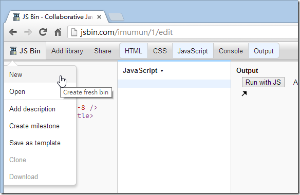
Si eres miembro registrado, verás laOpenfunción, porque todos losBinque hayas editado se guardarán automáticamente; podrás volver a abrir en cualquier momento losBinsque hayas escrito. Como se muestra a continuación, si no quieres volver a ver ciertos Bins, también puedes configurarlos como archivados; por defecto no aparecerán aquí, aunque podrás recuperarlos en el futuro.

Como se muestra a continuación, haz clic enArchive viewpara recuperar los que antes estaban archivados.Bins
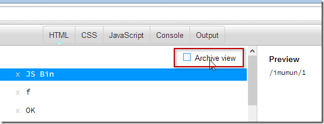
Del menú principal, laAdd descriptionfunción solo te ayuda a añadir la metaetiqueta description en el HTML.

Del menú principal, laCreate milestonefunción solo le dice a JS Bin: «He completado un hito de un Bin; por favor, fija esta versión actual.» Por lo tanto, al hacer clic en esta función, el «número de versión» en la URL de JS Bin aumentará automáticamente.+1
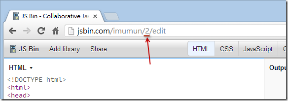
Del menú principal, laSave as templatefunción guarda tuBinbin actual como plantilla, para que cuando en el futuro crees un nuevoBin, el HTML / CSS / JavaScript predeterminado tendrá elBincontenido que hayas configurado actualmente.
Del menú principal, laClonefunción, comparada con laCreate milestonefunción anterior, tiene solo una pequeña diferencia: no cambia el número de versión, sino que genera unBinID completamente nuevo, como se muestra en la siguiente figura:
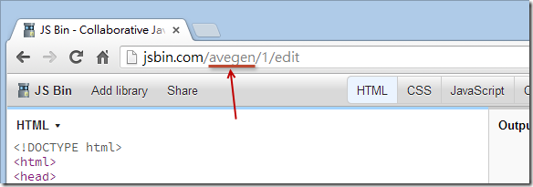
Del menú principal, laDownloadfunción descarga elBinBin; combina el HTML / CSS / JavaScript en un solo archivo HTML.

Barra de navegación 2. Add library (insertar biblioteca)
Este botón permite insertar cómodamente en tu HTML algunos recursos externos comunes, como jQuery, jQuery UI, jQuery Mobile, Bootstrap, YUI, AngularJS, Kendo UI, Backbone, Modernizr, etc. Es una pequeña herramienta muy práctica.
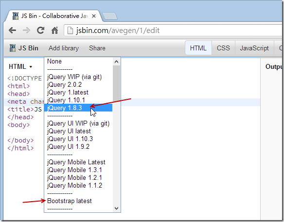
Barra de navegación 3. Varios editores, consola y panel de vista previa en tiempo real (Panel)
Panel del editor HTML
Este panel del editor tiene resaltado de sintaxis. Lamentablemente, aún no tiene Intellisense ni autocompletado, pero sí admiteEmmet ( Zen Coding) para escribir código, ¡es impresionante! Si no conoces Zen Coding, puedes consultar un vídeo tutorial que grabé antes: 【Aprovechando la extensión de VS2012: usar ZenCoding para generar rápidamente sintaxis HTML (Web Essentials 2012)】, donde se demuestra cómo utilizar laZen Codingsintaxis especial para escribir rápidamente contenido HTML.
Además, puedes cambiar entre diferentes sintaxis de escritura; al final, haz clic enConvert to HTMLpara convertirla automáticamente a formato HTML.
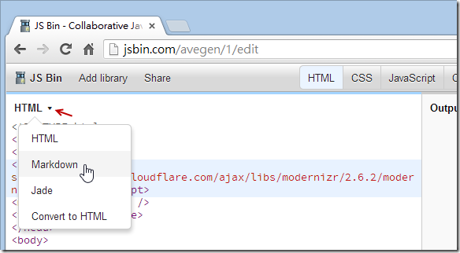
Panel del editor CSS
Es muy parecido al editor HTML; también admite laZen Codingsintaxis. También puedes escribir estilos CSS usando la sintaxis más eficiente de LESS o Stylus; al final, igualmente haz clic enConvert to CSSpara convertirla automáticamente al formato CSS estándar.
Nota: incluso puedes usar JS Bin directamente comoLESS或Stylusherramienta de aprendizaje.

Panel del editor JavaScript
Es muy similar a los editores de HTML / CSS; también admite varias sintaxis que ayudan a escribir JavaScript de forma eficiente, ¡e incluso admite TypeScript!

Panel de la consola (Console)
Este panel es igual al panel Console de las herramientas de desarrollador de los navegadores. No sé por qué hicieron además una versión web; creo que no es mejor que la integrada en el navegador, así que casi no lo uso.
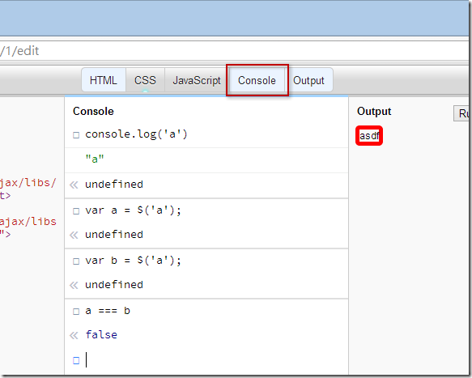
Panel de salida (Output)
La función principal de este panel es mostrar el resultado final de la ejecución de la combinación de HTML / CSS / JavaScript. De forma predeterminada, laAuto-run JSopción está marcada, lo que significa que mientras escribes en el editor de JavaScript, actualizará continuamente la página web en el panel Output. A veces esta opción puede hacer que el navegador se cuelgue; si encuentras inestabilidad en el navegador, se recomienda desmarcar esta opción. Después de marcarla, para ejecutar el JS modificado, tendrás que pulsar elRun with JSbotón para que realmente se ejecute la nueva versión del programa JavaScript.

En el extremo derecho, laLive previewflecha abre la página web en una ventana completamente nueva. En ese momento notarás que la URL es un poco diferente, es decir, la parteeditha desaparecido; esto también significa que puedes compartir esta URL con otras personas para que vean el resultado de la ejecución de la página, o interactuar de forma más completa con las funciones interactivas configuradas en la página, sin verse afectados porJS Binla influencia de los paneles de edición. Como se compara en la siguiente figura:
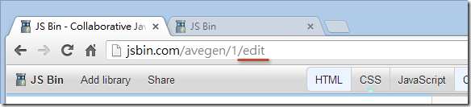

Barra de navegación 4. Iniciar sesión, registrarse, actualizar la contraseña de la cuenta de miembro (sin datos personales)
En JS Bin, solo necesitas introducir Email y Password para registrarte con éxito; no hace falta verificar la identidad. Si te equivocas de cuenta o contraseña, no importa, ¡solo registra una nueva! Tras iniciar sesión, puedes actualizar el Email y la Password cuando quieras. ¡Es muy abierto!

Barra de navegación 5. Ayuda (Help)
Si lees todos los enlaces de aquí, te darás cuenta de que el aspecto sencillo de JS Bin te engañó; en realidad, ¡su contenido es muy rico!

Barra de navegación 6. Compartir (Share)
Cuando tuBinbin esté terminado de editar, puedes compartirlo de muchas formas. En este menú de la función Share se ofrecen algunas opciones:
"Lock revision #1 from further changes" significa que quieres bloquear la versión actual #1 (es decir, la parte1en la barra de direcciones). Esta función es exactamente igual que laCreate milestonedel menú principal de JS Bin.

La URL que proporciona "Live & Full Preview" lleva a una página web sin los paneles del editor, por lo que al probar ciertas funciones hay menos interferencias. No obstante, en la esquina superior derecha de la página aparecerá un botón flotante "Edit in JS Bin", con el que podrás entrar al panel de edición en cualquier momento.
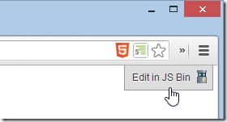
"Code View" es la vista que usamos para editar.
"Embed" no solo incrusta un hipervínculo; al final también carga un archivo JavaScript que convierte el hipervínculo directamente en una página compleja, como se muestra en la siguiente figura:

Después de poner este código en la página web, el resultado mostrado es como se ve en la siguiente figura:

El último Codecast es una función de «transmisión» (broadcast). Puedes compartir esa URL con otras personas y pedirles que abran la página web. Después podrás seguir modificando cualquier contenido de este Bin, y el navegador de la otra persona verá el mismo contenido que tú. Por eso se llama función de «transmisión», ¡muy adecuada para la enseñanza en línea o a distancia!
§ Compartir algunos consejos para usar JS Bin
1. Habilitar la visualización de números de línea
Este es un truco no documentado. Haz doble clic (Double Click) rápidamente en el título del panel del editor para habilitar la visualización de números de línea. Si vuelves a hacer doble clic, se desactiva. Muy práctico.


2. PersonalizarBinel método del ID
Este es otro truco no documentado. La mayoría de la gente cree que JS Bin no permite personalizar la URL, pero en realidad sí se puede. El método es el siguiente:
No importa cuál sea la URL actual, escribe directamente en la barra de direcciones la parte que deseas personalizarBin ID, como se muestra a continuación:

Después de presionar Enter, se genera automáticamente un nuevo Bin, y esteBin ID¡ya es tuyo! (^_^)

3. ControlarBinlos paneles predefinidos de la pantalla de edición
Cuando quieras entrar en la pantalla de edición de un Bin, dependiendo de la configuración de JS Bin de cada persona, los cinco paneles que se abren por defecto no son iguales. Si hoy quieres compartir un Bin con alguien y deseas que esa persona solo tenga abiertos los paneles HTML y JavaScript por defecto, puedes modificar ligeramente la URL. Por ejemplo, la siguiente URL de Bin:
- http://jsbin.com/avegen/1/edit
Podemos modificar la URL de la siguiente manera (agregando una Query String al final de la URL y separándola con comas), y luego enviar esa URL a la otra persona. Así, esa persona abrirá los paneles HTML y JavaScript según tu intención:
- http://jsbin.com/avegen/1/edit ?html,javascript
Los nombres de los parámetros que representan estos cinco paneles son los siguientes:
- htmlEditor HTML
- cssEditor CSS
- javascriptEditor JavaScript
- consoleConsola
- livePanel de vista previa en tiempo real
4. Habilitar el resaltado de llaves correspondientes en JavaScript
Dado que JS Bin utilizaCodeMirrorel paquete como editor de JavaScript (este paquete es súper potente), si deseas personalizar el editor de JavaScript es posible. Solo tienes que consultarla documentación de la API de CodeMirrory listo. Aquí te presento una buena opción de configuración, que es habilitar la función de resaltado de llaves correspondientes en JavaScript.
Tomemos este Bin como ejemplo:http://jsbin.com/oyuyev/1/edit
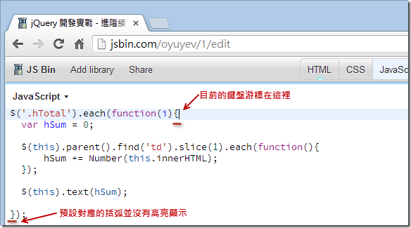
Debemos ejecutar el siguiente comando en la pestaña Console (Consola) de las herramientas de desarrollo del navegador. Abre las herramientas de desarrollo integradas en el navegador (IE8+, Chrome, Firefox, Safari todos tienen este tipo de herramientas), cambia a la pestaña Console o Consola, y luego ingresa:
jsbin.settings.editor.matchBrackets = <span class="kwrd" style="color: #0000ff;">true</span> ;

Después presiona F5 (actualizar la página). Cuando muevas el cursor del teclado a la misma llave, verás que se resalta:

5. Restablecer el entorno de desarrollo de JS Bin
En la versión actual de JS Bin, si ejecutas la opción del menú principalSave as templatelamentablemente no podrás volver atrás. Esto significa que no puedes restaurar la plantilla HTML predefinida integrada en el sitio. Además, si has ajustado demasiado el editor y no puedes usarlo con normalidad, puedes restablecer el entorno de desarrollo de JS Bin. En ese caso, puedes utilizar el siguiente truco.
Nota: Este también es un truco no documentado. ¡Me llevó varias horas resolver esta técnica!
Abre las herramientas de desarrollo integradas del navegador (IE8+, Chrome, Firefox, Safari todos tienen este tipo de herramientas), cambia a la pestaña Console o Consola, y luego ingresadelete jsbin.settingsy presiona Enter para ejecutarlo. Si se ejecuta correctamente, se restablecerán todos los ajustes.
delete jsbin.settings
Sin embargo, también hay que limpiar el contenido de las templates de html / css / javascript, porque JS Bin guarda estas templates en el localStorage del navegador (este es un mecanismo de almacenamiento de HTML5). En ese caso, también debes ingresarlocalStorage.clear()para poder eliminar por completo estos datos residuales.
localStorage.clear()
La pantalla después de completar la ejecución es la siguiente. Después de ejecutarlo, presiona F5 (actualizar) para volver a los valores predeterminados originales.

6. Exportar solo el contenido de JavaScript (para que otro Bin pueda cargarlo mediante AJAX)
Tomamoshttp://jsbin.com/ json-test /1/ editcomo ejemplo, ingreso unJavaScript de JSON puromensajes de advertencia, pero por ahora no les prestamos atención.JSHintNota: Las cadenas en JSON deben estar entre comillas dobles.
{
"author" : "Will" ,
"bookname" : "ASP.NET MVC 4开发实战"
}
En este momento, creamos otro Bin nuevo y agregamos la librería jQuery
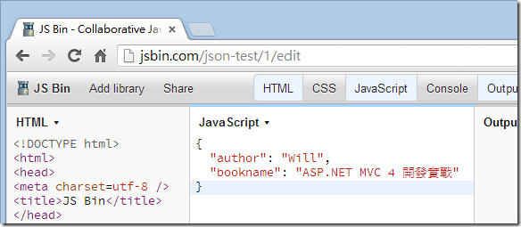
(Nota: como el contenido HTML ha sido cambiado, se le asignará inmediatamente unBinID, generando una URL completamente nueva)
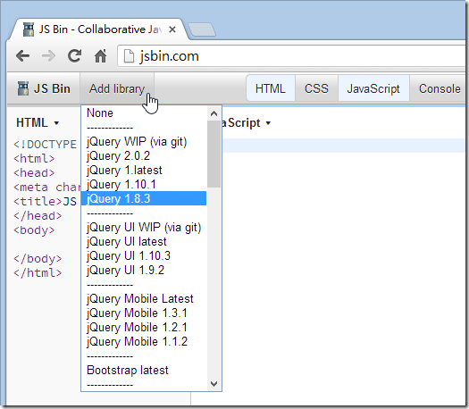
En este punto, modificamos un poco la URL anterior, cambiando/editpor.jspara obtener solo la parte de JavaScript, como se muestra a continuación:
- http://jsbin.com/ json-test /1 .js
Luego ingresa el siguiente código jQuery para intentar probar la función AJAX de jQuery:
$.ajax({
url: 'http://jsbin.com/json-test/1.js' ,
dataType: 'json' ,
success: function (data) {
alert(data.author + ' - ' + data.bookname);
}
});
Si puedes ver la misma pantalla que yo, significa que lo que obtuvimos mediante $.ajax es efectivamente un objeto JSON.
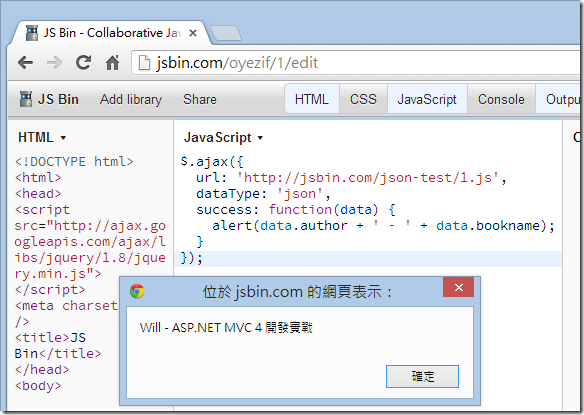
Haz clic en mí para compartir notas
<p style="font-size:14px;">¡La nota debe ser una extensión del contenido de este artículo!</p><br> <p style="font-size:12px;"><a href="../tougao.html" target="_blank">Para enviar un artículo, haz clic aquí</a></p> <p style="font-size:14px;"><a href="./runoob-user-test-intro.html" target="_blank">Cómo obtener el código de invitación de registro</a></p> <h3 class="text-muted"><i class="fa fa-info-circle" aria-hidden="true"></i> Antes de compartir una nota, debes <a href=".." class="runoob-pop">iniciar sesión</a>.</h3> <p><a href="./runoob-user-test-intro.html" target="_blank">Cómo obtener el código de invitación de registro</a></p>